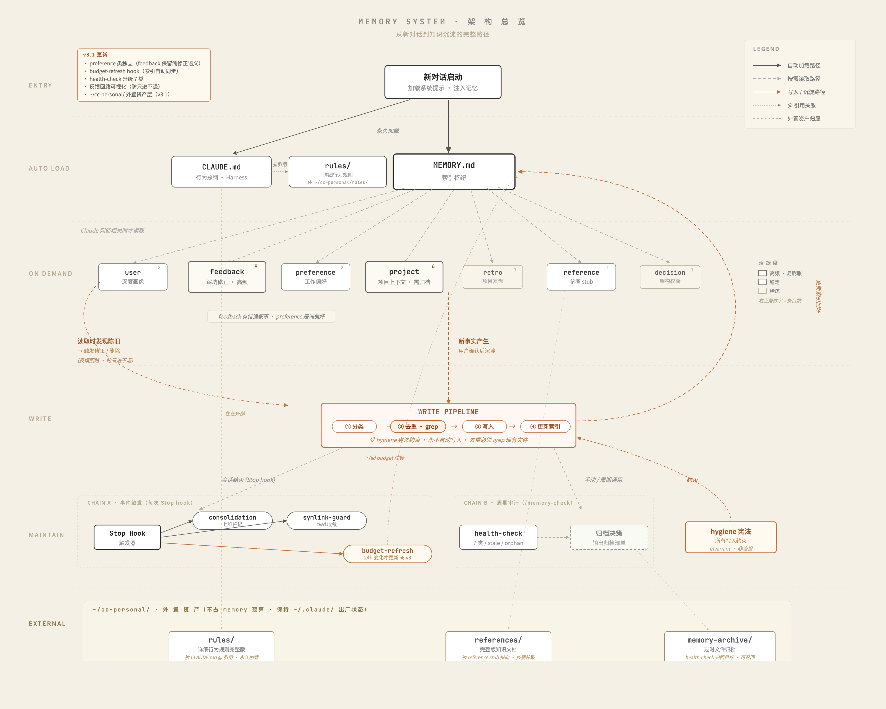

Q: Claude 会不会偷偷乱写记忆？
不会。hygiene 宪法第 4 条 "suggest, never auto-save"——Claude 每次只会建议"要不要沉淀这条"，你确认后才写文件。
Q: 换电脑怎么迁移？
备份两个目录就行：~/.claude/projects/<家目录转义名>/memory/ 和 ~/cc-personal/。重装 Claude Code 不影响。
先讲痛点——如果你没遇到过下面这些，可能暂时不需要这套：
~/cc-personal/，不污染出厂目录，备份迁移都不影响。| 类型 | 人话理解 |
|---|---|
user | 我是谁（身份、技术栈、协作风格） |
feedback | 我踩过什么坑（带"上次错了"叙事） |
preference | 我喜欢怎么干（无错误叙事的纯偏好） |
project | 我在做什么（活跃项目的上下文） |
retro | 我做完了什么（项目完整复盘叙事） |
reference | 我读过什么（外部知识的入口） |
decision | 我为啥选 A 不选 B（架构权衡） |

配套有一份可执行的安装手册 memory-system-setup-CONI.md。
用法非常简单：
memory-system-setup-CONI.md手册里包含：宪法文件、MEMORY.md 索引、user-profile 骨架、CLAUDE.md 更新、cc-personal 目录、symlink 收敛脚本、健康检查脚本、budget 自动刷新脚本、settings.json hook 配置——全套复制可用。
grep 现有文件，能更新旧的就不开新文件~/cc-personal/references/| 方案 | 载体 | 谁控制 | 成本 | 可迁移 |
|---|---|---|---|---|
| 本方案 | 纯本地 md 文件 | 你完全掌控 | 0 | 完全可迁移 |
| mem0 / zep | 云端向量库 | 依赖第三方 | 订阅费 | 绑定服务 |
| Cursor / Windsurf | IDE 自管 | IDE 决定 | 内置 | 不可移植 |
本地文件的优势：你能 cat 能 grep 能 git diff，记忆系统对你透明，不是黑盒。
Q: Claude 会不会偷偷乱写记忆？
不会。hygiene 宪法第 4 条 "suggest, never auto-save"——Claude 每次只会建议"要不要沉淀这条"，你确认后才写文件。
Q: 换电脑怎么迁移？
备份两个目录就行：~/.claude/projects/<家目录转义名>/memory/ 和 ~/cc-personal/。重装 Claude Code 不影响。
yt-dlp），直接把项目地址给 agent，让它帮你打包成 skill。以后调用就能直接出结果，不用每次重配环境。skill-creator，跟它对话就能生成新 skill——从 capture intent 到 iterate 全流程托管。HANDOFF.md。连开十几个对话都不会丢上下文。让同一个 agent 做两次：第一次当评审（挑毛病、打分、列优先级），第二次当执行（按评审结果改）。
比直接说"帮我把 X 改好"质量好一个数量级——agent 第一步建立"哪里有问题"的心智模型，第二步带着这个模型针对性改。
Round 1 → 「评价一下这份 X，指出最该改的 3 个点，按优先级排」
Round 2 → 「按你刚列的 3 个点改一下」
对付费手册、公众号文章、skill 文档、代码重构都管用。
每次对话都随意打开文件夹，整个 projects/ 目录会越来越乱。办事前先想好在哪个文件夹工作，别图省事用默认目录。
还有一点——中文文件夹名会被 Claude Code 识别成一串连字符（比如 MBTI测评应用 → ----），定位完全没法看。
projects/ 一眼就能看清，养成给项目目录用英文 / 拼音命名的习惯——比如 mbti-app 而不是 MBTI测评应用。每次启动新项目，第一件事就是让 agent 写一份 HANDOFF.md——记录当前进度、关键决策、待办事项、已知坑点。
它的作用不是做给人看的，而是做给未来的 agent 看的：
Harness 字面意思是"马具"——项目开始前先给 agent 套上"该做什么 / 不该做什么"的约束框架，它就不会在工作中跑偏。
我自己的 harness 一般包括三部分：
为什么必须先做 harness：没有规矩的工作空间，agent 会用自己的惯性填空；等它按自己的方式铺开了你再纠正就晚了，每次对话都在重新教。规则要写在前面，不是纠偏的时候才补。
handoff + harness 是项目工作系统的两根支柱：
· handoff 管纵向连续性——跨 session、换设备、中途暂停回来都能接上
· harness 管横向约束性——同时开十几个对话推进不同模块也不会各自跑偏
两件配齐，你就能同时推进多个复杂项目而不失控。
chrome --headless、playwright 等），别走 MCP 截图——MCP 把图像 base64 塞进上下文，吃 token 严重（约 3–5K tk/张 vs CLI 的 ~50 tk，差距约 50 倍）。lark-cli 能让 agent 直接读写你的飞书文档、表格、日历、消息——写进飞书云文档、发消息汇报进度都可以。agent 延伸到日常协作平台，不再是孤立在终端里的工具。CLAUDE.mdsettings.jsonskills/projects/.../memory/HANDOFF.md 再谈 harness
读到这一页，说明你真的把这本手册翻完了 ——
一个写下它的大学生，先向你鞠一躬。
这本橙皮书里的每一条，都是我和 Claude 一起 踩坑踩出来的。 不是"AI 使用秘籍"，只是一个大学生的工作法—— 你挑能用的拿去。
如果它让你少走了一小时弯路，
那下次我再写一本，也就值了。